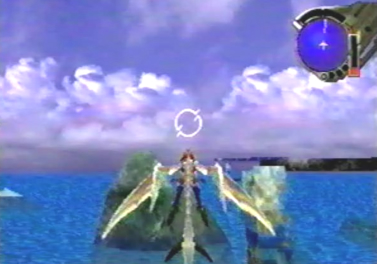
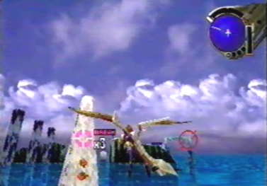
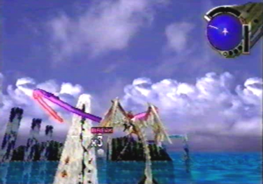
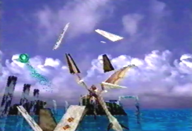
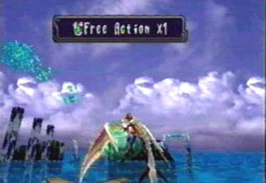
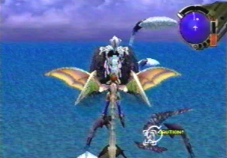
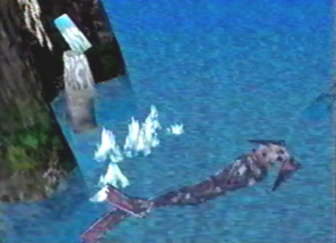
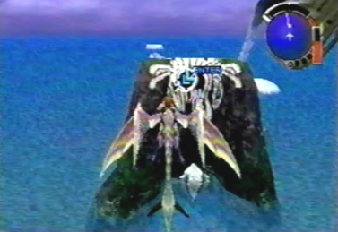
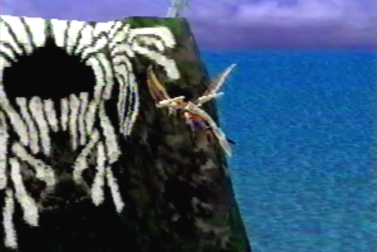
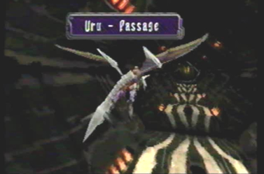

The Cursors Main Functions when Controlling the Dragon When controlling the dragon throughout the many different locations within the game, you will also have to open item containers and examine objects. To open or examine these objects, the cursor is used in the very same way Edge uses it. There are only minor differences. Press the A button to make the cursor appear. When opening item containers, you still have to move the cursor with the D-pad or analog stick over the container, but this time, instead of the container becoming highlighted, your dragon will lock-on to it. Once the A button is pressed, the dragon will shoot out homing lasers towards the item container you've locked on to, thus opening the container and acquiring the item inside. When examining an object, as you move the cursor over that object, it will become highlighted. When you press A, the dragon will fire a laser at the object. An action will occur or a message will be received, pertaining to that object.You will also use the cursor to enter passages or entry ways. |
 Press the A button to make the dragon's cursor appear. It is exactly the same as Edge's cursor. |
 While near an item container, lock-on to it by moving the cursor over it with the D-pad or analog stick. |
 Once the A button is pressed, the dragon will fire lasers at the item container. |
 These lasers will then break open the item container. |
 Once the item container is broken, the item, in the form of pure energy, will be obsorbed into the dragon for storage. |
 Inanimate objects aren't the only things you can examine. In this pic, the dragon highlights a whale-like creature. This is done by moving the cursor over it with the D-pad or analog stick. |
 Once the creature is highlighted, pressing the A button causes an action to occur. The whale, in a playful manner, breaks this large keystone that was blocking your entry into this cave. |
 You can now highlight the opening of the cave with the cursor, until you get a message saying enter. |
 When you press the A button, the dragon then enters the cave. |
 You will now have entered the cave and will be inside an internal passage. |